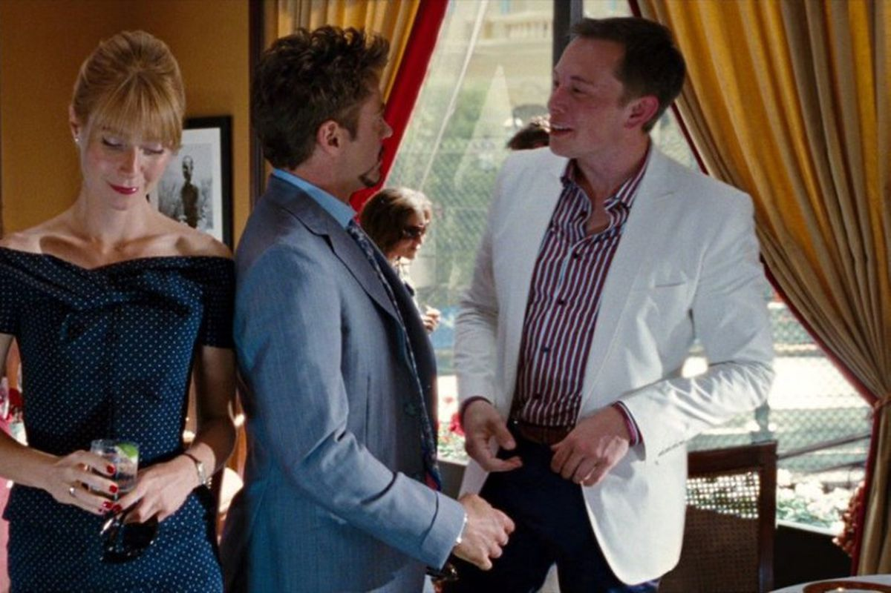

Iron man 2
Iron man 2 (2010) -filmweb

Pół roku po wydarzeniach z pierwszej części, kiedy to Tony Stark (Robert Downey Jr.) ujawnił światu, że jest Iron Manem, milioner stał się bohaterem i obrońcą międzynarodowego pokoju.
Owa popularność przysparza Starkowi wielu nowych wrogów. Można do nich zaliczyć Justina Hammera (Sam Rockwell) oraz żądnego zemsty rosyjskiego fizyka Ivana Vanko (Mickey Rourke). Chce on zniszczyć Starka za wszelką cenę. Na dodatek Tony musi uporać się z rządem, który chce położyć ręce na jego osiągnięciach technologicznych. Sytuację utrudnia pogarszający się z każdym dniem stan zdrowia bohatera.
W swoich zmaganiach ma wsparcie przyjaciół oraz organizacji S.H.I.E.L.D.
Strona główna